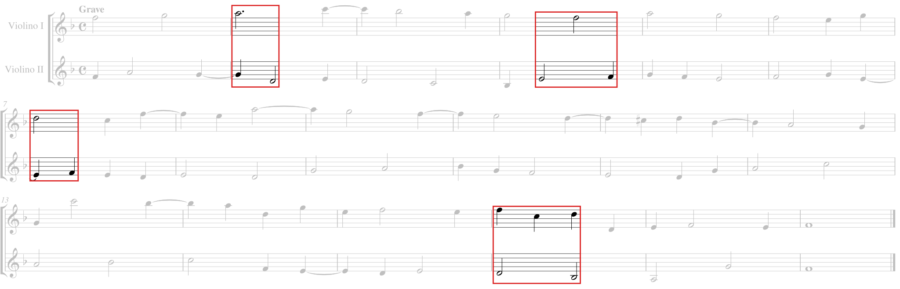

Die Stimme, die bei den Dissonanzen Patiente ist, steigt nach dem empfangenen Schlag immer um eine Stufe ab, sei es um einen Ganz- oder einen Halbton. Die Agente mag dann gehen, wohin es ihr beliebt, sofern sich die Stimmen nach dieser Verletzung in einer Konsonanz treffen […].
Giovanni Maria Artusi, Seconda parte dell'arte del contraponto, Venedig 1589, S. 27 f. Text nach der Transkription im Thesaurus Musicarum Italicarum (Universität Utrecht).

Kadenzpunkte / Bass konsonant zur Agente / Diminution
Arcangelo Corelli, Sonata op. 3 Nr. 1, Grave, T. 9–10 (in der Reduktion T. 8–9). Notentext nach der Kodierung von Michael Scott Cuthbert (music21, CC BY), verglichen mit der Ausgabe von Joseph Joachim und Friedrich Chrysander, London 1888–1891.